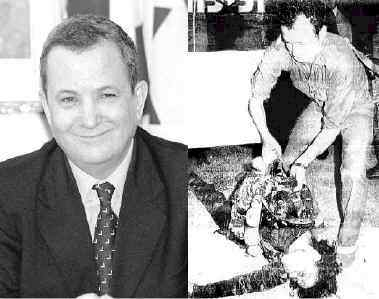

Website
of the department of Urology, University Medical Center Nijmegen, the
Netherlands hacked!
You have been
hacked by m0r0n and nightman of WFD (World's Fantabulous Defacers)!
See the true face of Israel...
(Note: The
Israeli Defense Forces will once again tell you this is 'Palestinian
Propaganda', but of surely, this is the truth - the truth they
don't want you, or the
world, to know. )
9/10/Pop Quiz for Everyone:
Which country alone
in the Middle East has nuclear weapons?
Answer: Israel
Which country in the
Middle East refuses to sign the nuclear non-profileration treaty and
bars international inspections?
Answer: Israel
Which country in the
Middle East seized the sovereign territory of other nations by military
force and continues to occupy it in defiance of United Nations Security
Council resolutions?
Answer: Israel
Which country in the
Middle East routinely violates the international borders of another
sovereign states with warplanes, artillery, and gunfire?
Answer: Israel
What American ally in the Middle East has for years sent
assassins into other countries to kill its political enemies? (sometimes called exporting terrorism)
Answer: Israel
In which country in the Middle East have high-ranking
military officers admitted publicly that unarmed
prisoners of war were executed?
Answer: Israel
What country in the Middle East refuses to prosecute its
soldiers who have acknowledged executing prisoners of
war?
Answer: Israel
What country in the Middle East created 762,000 refugees
and refuses to allow them to return to their homes, farms,
and businesses?
Answer: Israel
What country in the Middle East refuses to pay compensation
to people whose land, bank accounts and businesses it
confisicated?
Answer: Israel
In
what country in the Middle East was a high-ranking United Nations diplomat assassinated?
Answer: Israel
In what country in the
Middle East did the man who ordered the assassination of a high-ranking U.N.
diplomat become prime minister.
Answer: Israel
What country in the
Middle East blew up an American diplomatic facility in Egypt and attacked a
U.S. ship in international waters, killing 33 and wounding 177 American
sailors.
Answer: Israel
Which country on Planet
Earth has the 2nd most powerful lobby in the United States of America?
Answer: Israel
More truths
the IDF wants to keep hidden:
Israeli
soldiers look over the remains of a baby they beheaded.
According to them, the baby was an "Islamic Extremist."
So m0sad, this baby was a terrorist?
An
Israeli soldier with "Born to kill" written on the back of his
helmet, aims his M-16 assault rifle at Palestinian stone-throwers during
Israel's holocaust campaign December 4th in the West Bank town of Bethlehem.
"Born to
kill" huh? It says it all.

Barak in 1978
: profaning the corps of Palestinian martyr Dallal Al-Maghrebi
And this is
supposed to be a "peace partner?!"
Who
are the terrorists in these pictures? The victims...or the
victimizers?? The oppressed...or the oppressors? Israel is a
racist, fascist, Neo-Nazi state dedicated to systemically kill all
Palestinians, as shown above and below.
Israeli soldiers
shoot indiscriminately at everything and anything Palestinian. Rocks
against missiles, tanks against unarmed children. The Israeli Army
even shoots ambulances. . .
Which country in the
Middle East is in defiance of 69 United Nations Resolutions?
Answer: Israel
What country is the
United States bombing for years because "U.N. Security Councils must be
obeyed?"
Answer: Iraq
Thousands of people at Berkeley University in California protested what
was going to be the speech of criminal Benjamin Netanyahu, ex prime minister
of criminal Israel. Even Jews fed up with Israel and the heinous
atrocities it commits showed up and made their voice heard. Netanyahu
got scared and left after being notified 'his safety could not be
guaranteed.' We salute the Muslims of America and the Jews who are
fighting against the Zionist Israel.
Some tear jerking FACTS!!!!!
7 Palestinians slaughtered.
08th December 2000,
BETHLEHEM, West Bank (AP) - Palestinians, marking the anniversary of their first uprising, threw rocks and
fought gun battles with Israeli troops Friday. Seven Palestinians were butchered.
The bloody clashes Friday, the deadliest day of Israeli-Palestinian fighting since Nov. 21, dimmed prospects of a
resumption of peace talks. A U.S.-led fact-finding commission is to arrive in the region Monday to look into the
causes of the violence.
Palestinian activists had called for a "day of rage'' to mark the Dec. 8, 1987 start of the six-year
uprising that led to a mutual recognition treaty between Israel and the Palestine Liberation Organization and paved the way for
peace talks.
In the second uprising, which erupted Sept. 28, more than 300 Palestinian people have been killed.
"What happened today is a confirmation ... that the uprising is
continuing,'' said Marwan Barghouti, head of
Palestinian leader Yasser Arafat's Fatah movement in the West Bank. "The uprising is a strategic choice of the
Palestinian people, and it can't be stopped. There will be an escalation in the coming
days.''
Shouts to :- Gforce Pakistan,
DoctorNuker, m0s, Iniquity, fighterforislam
(thanks for the html),
Cyberpunk, B_real and all of WFD. Prime
suspects, Aniclator, Rsh, Hackweiser, ScorpionKTX, laughingeyes, senn (Thanks
for supporting the Muslims!) Cooldude and everyone else who support our
cause.


 Thousands of people at Berkeley University in California protested what
was going to be the speech of criminal Benjamin Netanyahu, ex prime minister
of criminal Israel. Even Jews fed up with Israel and the heinous
atrocities it commits showed up and made their voice heard. Netanyahu
got scared and left after being notified 'his safety could not be
guaranteed.' We salute the Muslims of America and the Jews who are
fighting against the Zionist Israel.
Thousands of people at Berkeley University in California protested what
was going to be the speech of criminal Benjamin Netanyahu, ex prime minister
of criminal Israel. Even Jews fed up with Israel and the heinous
atrocities it commits showed up and made their voice heard. Netanyahu
got scared and left after being notified 'his safety could not be
guaranteed.' We salute the Muslims of America and the Jews who are
fighting against the Zionist Israel. =
=